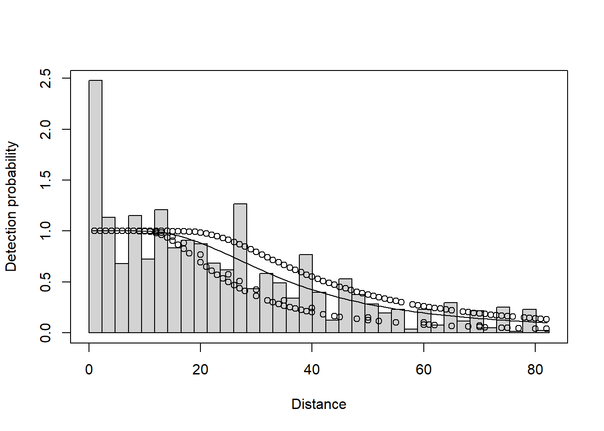

AbundanciaConteo <- function(A, x, n, r){
N = (A*sum(x)) / (n*3.1416*r^2)
print(N)
}
A= 2
x= 50
n= 10
r= 0.050
AbundanciaConteo(A=A, x=x, n=n, r=r)[1] 1273.237Los conteos por puntos son una técnica comúnmente utilizada en ecología y biología para estimar la abundancia de organismos en un área determinada. En este método, se seleccionan puntos de muestreo dentro del área de estudio y se registra el número de individuos de la especie de interés que se encuentran en cada punto durante un período de tiempo específico. Estos conteos pueden realizarse de manera visual o auditiva, según la especie y las condiciones del entorno. Posteriormente, los datos recopilados se utilizan para calcular una estimación de la densidad o abundancia total de la población en el área de estudio, mediante técnicas estadísticas como extrapolación o interpolación. Los conteos por puntos son una herramienta valiosa para monitorear poblaciones y comprender la distribución espacial de los organismos en su hábitat.
Para estimar la abundancia utilizamos la siguiente formula:
\[N = \frac{A{\sum x_i}}{n \pi r^2}\]
Donde:
N = Abundancia de la población A = Área x = Número de aves observadas n = Total de puntos de conteo r = Radio del punto de conteo
Ejercicio
Se llevó a cabo un estudio para estimar la abundancia de aves mediante 10 conteos por punto, cada uno con un radio fijo de 50 metros. El estudio se realizó en un área de 2 kilómetros cuadrados y se avistaron en total 50 individuos.
AbundanciaConteo <- function(A, x, n, r){
N = (A*sum(x)) / (n*3.1416*r^2)
print(N)
}
A= 2
x= 50
n= 10
r= 0.050
AbundanciaConteo(A=A, x=x, n=n, r=r)[1] 1273.237Estimar la abundancia y distribución espacial de poblaciones animales y vegetales es esencial para la conservación y gestión. El paquete R Distance implementa métodos de muestreo de distancia para estimar la abundancia.
“Describimos cómo los usuarios pueden obtener estimaciones de abundancia (y densidad) utilizando el paquete, así como documentando los enlaces que proporciona con otros paquetes R más especializados. También demostramos cómo Distance proporciona una vía de migración desde software anterior, lo que nos permite ofrecer métodos de vanguardia a los usuarios más rápidamente”. https://www.jstatsoft.org/article/view/v089i01
library(Distance)Los datos de transecto lineal han sido simulados a partir de modelos ajustados a datos de la ballena minke antártica (Balaenoptera bonaerensis). Estos datos fueron recolectados como parte del programa Investigación sobre Ballenas y Ecosistemas del Océano Austral (IWC IDCR-SOWER) de la Comisión Ballenera Internacional durante las encuestas de verano austral de 1992-1993. Los datos consisten en 99 observaciones en 25 transectos, los cuales fueron estratificados según la ubicación (cerca o lejos del borde de hielo) y los datos de esfuerzo (longitudes de transecto). Más detalles sobre la encuesta están disponibles en Branch y Butterworth (2001) (los datos son simulados según el diseño utilizado para “Área III 1992/93” en dicho estudio).
data("minke")
head(minke) Region.Label Area Sample.Label Effort distance object
1 South 84734 1 86.75 0.10 1
2 South 84734 1 86.75 0.22 2
3 South 84734 1 86.75 0.16 3
4 South 84734 1 86.75 0.78 4
5 South 84734 1 86.75 0.21 5
6 South 84734 1 86.75 0.95 6Detection functions
La detectabilidad en conteos por puntos se refiere a la probabilidad de detectar un organismo presente en un punto de muestreo durante un período de observación determinado. Esta detectabilidad puede variar según diversas condiciones, como el comportamiento del organismo, la estacionalidad, el hábitat y las habilidades del observador. Comprender y estimar la detectabilidad es crucial para obtener estimaciones precisas de la abundancia de una especie utilizando conteos por puntos, ya que afecta directamente a la eficacia del método de muestreo y a la interpretación de los datos recopilados. Se pueden emplear diversas técnicas y modelos estadísticos para estimar la detectabilidad y corregir los sesgos que pueda introducir en las estimaciones de abundancia.
minke_hn <- ds(minke, truncation = 1.5)Starting AIC adjustment term selection.Fitting half-normal key functionAIC= 46.872Fitting half-normal key function with cosine(2) adjustmentsAIC= 48.872
Half-normal key function selected.plot(minke_hn)hazard rate model can be fitted as:
minke_hrcos <- ds(minke, truncation = 1.5, key = "hr")Starting AIC adjustment term selection.Fitting hazard-rate key functionAIC= 48.637Fitting hazard-rate key function with cosine(2) adjustmentsAIC= 50.386
Hazard-rate key function selected.plot(minke_hrcos)summary(minke_hrcos)
Summary for distance analysis
Number of observations : 88
Distance range : 0 - 1.5
Model : Hazard-rate key function
AIC : 48.63688
Optimisation: mrds (nlminb)
Detection function parameters
Scale coefficient(s):
estimate se
(Intercept) -0.2967912 0.1765812
Shape coefficient(s):
estimate se
(Intercept) 0.964833 0.3605009
Estimate SE CV
Average p 0.6224396 0.0668011 0.1073214
N in covered region 141.3791725 17.7757788 0.1257312
Summary statistics:
Region Area CoveredArea Effort n k ER se.ER cv.ER
1 North 630582 4075.14 1358.38 49 12 0.03607238 0.01317937 0.3653591
2 South 84734 1453.23 484.41 39 13 0.08051031 0.01809954 0.2248102
3 Total 715316 5528.37 1842.79 88 25 0.04133635 0.01181436 0.2858103
Abundance:
Label Estimate se cv lcl ucl df
1 North 12181.419 4638.6284 0.3807954 5499.950 26979.692 12.96781
2 South 3653.345 910.0975 0.2491135 2181.595 6117.971 17.96263
3 Total 15834.764 4834.2848 0.3052957 8388.423 29891.167 15.25496
Density:
Label Estimate se cv lcl ucl df
1 North 0.01931774 0.007356107 0.3807954 0.008722023 0.04278538 12.96781
2 South 0.04311546 0.010740641 0.2491135 0.025746391 0.07220207 17.96263
3 Total 0.02213674 0.006758251 0.3052957 0.011726878 0.04178736 15.25496Otras series de ajuste pueden ser seleccionadas utilizando el argumento de ajuste y se pueden establecer órdenes específicos de ajustes utilizando el argumento order. Por ejemplo, para especificar un modelo uniforme con ajustes coseno de orden 1 y 2, podemos escribir:
minke_unifcos <- ds(minke, truncation = 1.5, key = "unif", adjustment = "cos", order = c(1, 2))Fitting uniform key function with cosine(1,2) adjustmentsAIC= 48.268plot(minke_unifcos)summary(minke_unifcos)
Summary for distance analysis
Number of observations : 88
Distance range : 0 - 1.5
Model : Uniform key function with cosine adjustment terms of order 1,2
Strict monotonicity constraints were enforced.
AIC : 48.26827
Optimisation: mrds (nlminb)
Detection function parameters
Scale coefficient(s):
NULL
Adjustment term coefficient(s):
estimate se
cos, order 1 0.75226850 0.1287542
cos, order 2 0.00847698 0.1335663
Estimate SE CV
Average p 0.5679413 0.07356047 0.1295213
N in covered region 154.9456024 22.81729437 0.1472600
Summary statistics:
Region Area CoveredArea Effort n k ER se.ER cv.ER
1 North 630582 4075.14 1358.38 49 12 0.03607238 0.01317937 0.3653591
2 South 84734 1453.23 484.41 39 13 0.08051031 0.01809954 0.2248102
3 Total 715316 5528.37 1842.79 88 25 0.04133635 0.01181436 0.2858103
Abundance:
Label Estimate se cv lcl ucl df
1 North 13350.321 5175.088 0.3876377 5980.933 29799.876 13.91044
2 South 4003.912 1038.823 0.2594521 2354.723 6808.153 20.96621
3 Total 17354.233 5445.561 0.3137886 9090.257 33131.011 16.97306
Density:
Label Estimate se cv lcl ucl df
1 North 0.02117143 0.008206844 0.3876377 0.009484783 0.04725773 13.91044
2 South 0.04725272 0.012259818 0.2594521 0.027789587 0.08034735 20.96621
3 Total 0.02426093 0.007612805 0.3137886 0.012708030 0.04631661 16.97306data("amakihi")
head(amakihi) Region.Label Area Sample.Label Effort object distance Month OBs Sp MAS HAS
1 792 0 1 1 1 40 0 TJS COAM 50 1
2 792 0 1 1 2 60 0 TJS COAM 50 1
3 792 0 1 1 3 45 0 TJS COAM 50 1
4 792 0 1 1 4 100 0 TJS COAM 50 1
5 792 0 1 1 5 125 0 TJS COAM 50 1
6 792 0 1 1 6 120 0 TJS COAM 50 1
Study.Area
1 Kana
2 Kana
3 Kana
4 Kana
5 Kana
6 KanaEl conjunto de datos de transectos de puntos consiste en 1485 observaciones de Amakihi (Hemignathus virens; un pájaro cantor hawaiano), recolectadas en 41 puntos entre 1992 y 1995. Los datos incluyen distancias y dos covariables recolectadas durante la encuesta: observador (un factor de tres niveles) y tiempo después del amanecer (transformado a minutos (continuo) o horas (factor)). Los datos son analizados de manera exhaustiva en Marques et al. (2007).
amakihi_hr_obs <- ds(amakihi, truncation = 82.5, transect = "point", key = "hr", formula = ~ OBs)Model contains covariate term(s): no adjustment terms will be included.Fitting hazard-rate key functionAIC= 10778.448amakihi_hr_obs_mas <- ds(amakihi, truncation = 82.5, transect = "point", key = "hr", formula = ~OBs + MAS)Model contains covariate term(s): no adjustment terms will be included.Fitting hazard-rate key functionAIC= 10777.376plot(amakihi_hr_obs)
summary(amakihi_hr_obs)
Summary for distance analysis
Number of observations : 1243
Distance range : 0 - 82.5
Model : Hazard-rate key function
AIC : 10778.45
Optimisation: mrds (nlminb)
Detection function parameters
Scale coefficient(s):
estimate se
(Intercept) 3.06441741 0.10882063
OBsTJS 0.53017383 0.09959194
OBsTKP 0.08885315 0.18075545
Shape coefficient(s):
estimate se
(Intercept) 0.869001 0.0626247
Estimate SE CV
Average p 0.3142725 0.02044585 0.06505773
N in covered region 3955.1667635 274.28193209 0.06934775
Summary statistics:
Region Area CoveredArea Effort n k ER se.ER cv.ER
1 1292 855298.6 855298.6 40 140 40 3.500000 0.3121472 0.08918492
2 194 876681.1 876681.1 41 172 41 4.195122 0.3088521 0.07362173
3 493 876681.1 876681.1 41 231 41 5.634146 0.3289972 0.05839344
4 494 513179.2 513179.2 24 141 24 5.875000 0.2712859 0.04617632
5 495 855298.6 855298.6 40 212 40 5.300000 0.4938078 0.09317129
6 792 876681.1 876681.1 41 146 41 3.560976 0.1945877 0.05464449
7 793 855298.6 855298.6 40 201 40 5.025000 0.2984737 0.05939775
8 Total 5709118.2 5709118.2 267 1243 267 4.655431 0.1262862 0.02712664
Density:
Label Estimate se cv lcl ucl
1 1292 0.0006079383 7.490139e-05 0.12320557 0.0004771000 0.0007746572
2 194 0.0005032046 4.807840e-05 0.09554445 0.0004165946 0.0006078208
3 493 0.0006758155 5.701887e-05 0.08437047 0.0005722934 0.0007980636
4 494 0.0007047058 5.385739e-05 0.07642535 0.0006061282 0.0008193156
5 495 0.0007750780 7.431169e-05 0.09587640 0.0006415261 0.0009364326
6 792 0.0007481561 1.130858e-04 0.15115274 0.0005569041 0.0010050878
7 793 0.0008431157 9.780204e-05 0.11600073 0.0006710575 0.0010592895
8 Total 0.0006927807 4.861688e-05 0.07017644 0.0006037888 0.0007948889
df
1 164.9851
2 111.7745
3 167.9147
4 163.4077
5 140.4684
6 561.6523
7 167.2606
8 1453.0007La bondad de ajuste (goodness of fit en inglés) es una medida que evalúa qué tan bien un modelo teórico se ajusta a los datos observados. En otras palabras, indica qué tan bien los valores predichos por el modelo se aproximan a los valores reales observados en los datos. La bondad de ajuste es fundamental en el análisis estadístico y en la validación de modelos, ya que permite determinar si un modelo proporciona una descripción adecuada y precisa de los datos observados. Se utilizan diferentes estadísticos y pruebas para evaluar la bondad de ajuste en función de la naturaleza de los datos y del modelo en cuestión. Una buena bondad de ajuste indica que el modelo es adecuado para los datos, mientras que una mala bondad de ajuste sugiere que el modelo puede requerir modificaciones o que otro modelo podría ser más apropiado.
amakihi_hn <- ds(amakihi, truncation = 82.5, transect = "point", key = "hn", adjustment = NULL)Fitting half-normal key functionAIC= 10833.841gof_ds(amakihi_hn)
Goodness of fit results for ddf object
Distance sampling Cramer-von Mises test (unweighted)
Test statistic = 0.930828 p-value = 0.00357795gof_ds(amakihi_hr_obs)
Goodness of fit results for ddf object
Distance sampling Cramer-von Mises test (unweighted)
Test statistic = 0.198335 p-value = 0.270719El AIC, o Criterio de Información de Akaike por sus siglas en inglés (Akaike Information Criterion), es una herramienta ampliamente utilizada en estadística para la selección de modelos. Su objetivo es encontrar el modelo que mejor balancee el ajuste a los datos y la complejidad del modelo. En resumen, el AIC penaliza la complejidad del modelo, premiando modelos que se ajustan bien a los datos con el menor número de parámetros.
La idea central es comparar diferentes modelos y seleccionar aquel que tenga el valor más bajo de AIC. Cuando se comparan modelos, un valor de AIC menor indica un mejor compromiso entre ajuste y complejidad. Es importante tener en cuenta que el AIC no proporciona una medida absoluta de la bondad de ajuste, sino que se utiliza principalmente para comparar modelos entre sí.
En la práctica, se calcula el AIC para cada modelo ajustado a los datos y se selecciona el modelo con el valor más bajo de AIC como el más adecuado para describir los datos. Esta técnica de selección de modelos con AIC es ampliamente utilizada en diversas disciplinas, incluyendo la econometría, la biología, la ecología y la ingeniería, entre
summarize_ds_models(amakihi_hn, amakihi_hr_obs, amakihi_hr_obs_mas) Model Key function Formula
3 \\texttt{amakihi\\char`_hr\\char`_obs\\char`_mas} Hazard-rate ~OBs + MAS
2 \\texttt{amakihi\\char`_hr\\char`_obs} Hazard-rate ~OBs
1 \\texttt{amakihi\\char`_hn} Half-normal ~1
C-vM p-value $\\hat{P_a}$ se($\\hat{P_a}$) $\\Delta$AIC
3 0.389084953 0.3186693 0.02015111 0.000000
2 0.270718919 0.3142725 0.02044585 1.072908
1 0.003577949 0.3514386 0.01127421 56.464992Resumen de los modelos de función de detección ajustados a los datos de amakihi. “CvM” significa Cramér-von Mises, Pa es la detectabilidad promedio (consulte “Estimación de la abundancia y la varianza”), se es el error estándar. Los modelos están ordenados según el AIC.
Regresando a los datos de ballena minke, tenemos la información necesaria para calcular A y a como se mencionó anteriormente, por lo que podemos estimar la abundancia y su varianza. Cuando proporcionamos datos a ds en el formato “flatfile” dado anteriormente, ds calculará automáticamente las estimaciones de abundancia basadas en la información de la encuesta en los datos. Habiendo ajustado previamente un modelo a los datos de ballena minke, podemos ver los resultados de la estimación de la abundancia al visualizar el resumen del modelo:
summary(minke_hn)
Summary for distance analysis
Number of observations : 88
Distance range : 0 - 1.5
Model : Half-normal key function
AIC : 46.87216
Optimisation: mrds (nlminb)
Detection function parameters
Scale coefficient(s):
estimate se
(Intercept) -0.3411766 0.1070304
Estimate SE CV
Average p 0.5733038 0.04980421 0.08687228
N in covered region 153.4962706 17.08959805 0.11133559
Summary statistics:
Region Area CoveredArea Effort n k ER se.ER cv.ER
1 North 630582 4075.14 1358.38 49 12 0.03607238 0.01317937 0.3653591
2 South 84734 1453.23 484.41 39 13 0.08051031 0.01809954 0.2248102
3 Total 715316 5528.37 1842.79 88 25 0.04133635 0.01181436 0.2858103
Abundance:
Label Estimate se cv lcl ucl df
1 North 13225.44 4966.7495 0.3755450 6005.590 29124.93 12.27398
2 South 3966.46 955.9616 0.2410113 2395.606 6567.36 15.80275
3 Total 17191.90 5135.5862 0.2987212 9183.475 32184.07 14.00459
Density:
Label Estimate se cv lcl ucl df
1 North 0.02097339 0.007876453 0.3755450 0.009523884 0.04618738 12.27398
2 South 0.04681073 0.011281913 0.2410113 0.028272077 0.07750560 15.80275
3 Total 0.02403400 0.007179465 0.2987212 0.012838347 0.04499280 14.00459Estadísticas resumidas: proporcionando las áreas, áreas cubiertas, esfuerzo, número de observaciones, número de transectos, tasa de encuentro, su error estándar y coeficiente de variación para cada estrato.
Abundancia: proporcionando estimaciones, errores estándar, coeficientes de variación, intervalos de confianza inferiores y superiores, y finalmente los grados de libertad para la estimación de abundancia de cada estrato.
Densidad: lista las mismas estadísticas que Abundancia pero para una estimación de densidad.
minke_table <- summary(minke_hn)$dht$individuals$N
minke_table$lcl <- minke_table$ucl <- minke_table$df <- NULL
colnames(minke_table) <- c("Stratum", "Abundancia", "ES", "CV")
minke_table$n <- c(54, 45, 54+45)
minke_table$IC95 <- 1.96 * minke_table$ES/sqrt(n)minke_table Stratum Abundancia ES CV n IC95
1 North 13225.44 4966.7495 0.3755450 54 3078.4232
2 South 3966.46 955.9616 0.2410113 45 592.5111
3 Total 17191.90 5135.5862 0.2987212 99 3183.0693library(tidyverse)Warning: package 'lubridate' was built under R version 4.3.2── Attaching core tidyverse packages ──────────────────────── tidyverse 2.0.0 ──
✔ dplyr 1.1.3 ✔ readr 2.1.4
✔ forcats 1.0.0 ✔ stringr 1.5.0
✔ ggplot2 3.4.3 ✔ tibble 3.2.1
✔ lubridate 1.9.3 ✔ tidyr 1.3.0
✔ purrr 1.0.2
── Conflicts ────────────────────────────────────────── tidyverse_conflicts() ──
✖ dplyr::filter() masks stats::filter()
✖ dplyr::lag() masks stats::lag()
ℹ Use the conflicted package (<http://conflicted.r-lib.org/>) to force all conflicts to become errorsggplot(data= minke_table, aes(x= Stratum, y= Abundancia))+
geom_col()+
geom_errorbar(aes(ymin= Abundancia -IC95,
ymax= Abundancia + IC95))+
theme_classic()